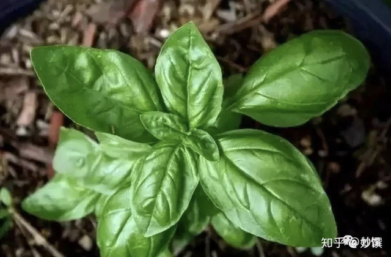
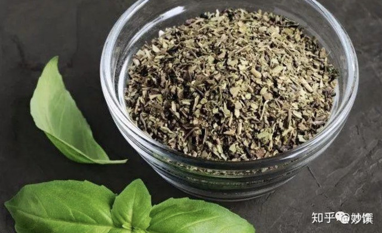
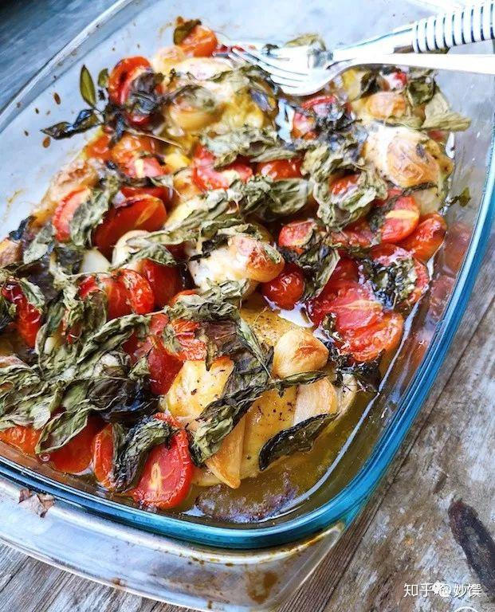
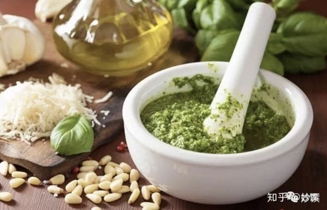
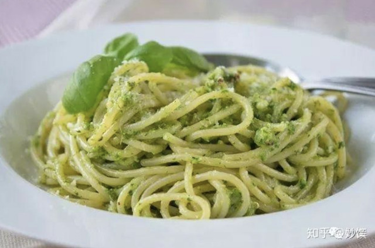
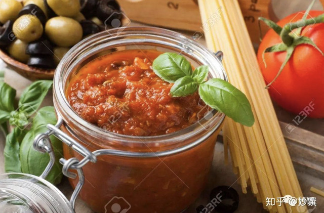
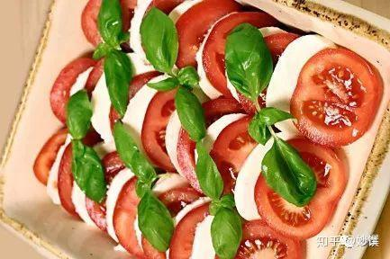
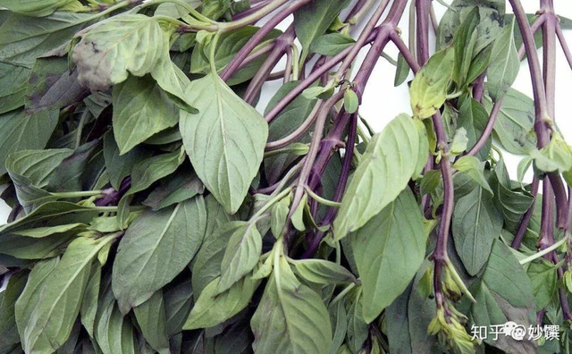

Basil 罗勒
罗勒品种繁多，这是两种最常用的。
意大利菜中使用最频繁的甜罗勒 (sweet basil)

▲新鲜甜罗勒，图源自网络。

▲干罗勒／罗勒碎，图源自网络。
气味：甘甜，略带咸鲜味。
回顾：
- 罗勒番茄大蒜慢烤鸡腿（强推!!）
- Frittata 意大利奶酪蔬菜烤蛋饼
- 意大利平民美食 Bruschetta
- 松子奶酪粒粒意面
coffee cat的晚餐：罗勒番茄大蒜慢烤鸡腿
是什么让我谈起这个烤鸡就很激动？
去做一下，不然再堆砌赞美，你也不懂。
记得要一盆栽的罗勒下去，别手软。

▲ 樱桃番茄汁、鸡汁、蒜汁、烤焦香的罗勒
完美交合
外焦内嫩吸饱汁液入味充分的鸡腿 …….
说不下去了，自己去烤。
应用：从基础意面酱汁到披萨，从沙拉到意面，罗勒太能揽事了，比马大姐还要忙。它有个情人叫番茄，是一对打不散的鸳鸯。

▲ 青酱 Basil Pesto，图源自网络。
用于拌意面，抹面包。
意大利每家每户的冰箱里可能都存放着青酱，
那种安全感就像中国人得有一瓶好辣酱一样。

▲ 青酱意面，图源自网络。

▲红酱 / 番茄罗勒酱Marinara，图源自网络。

▲以前在意大利点了这盘，全推给家里不爱吃鸡的那位了。
我眼中的欧洲黑暗料理之一， 因为不喜欢吃生罗勒。
九层塔(thai basil)
很多人是因为三杯鸡才知道有个九层塔，误以为它就是甜罗勒。九层塔在香气上更有冲击力，常用于东南亚菜 (泰国菜，越南米线) 和台湾菜，比如三杯鸡，出锅前撒入一把九层塔，香气瞬间迸发；而甜罗勒的香气要柔和些，叶片更大更肥厚一些。

▲九层塔(thai basil)，图源自网络。
叶片尖尖的，茎杆部分为紫红色，和甜罗勒的区别很明显。
coffee cat 的晚餐：好爱你呀三杯鸡！

▲ 用这个妥妥拿下家里不爱吃鸡的那位
罗勒特质：叶嫩，不耐热，遇热变黑，常用于做冷酱汁和沙拉。
强推的那道用了大量罗勒的烤鸡，是个反常规料理。